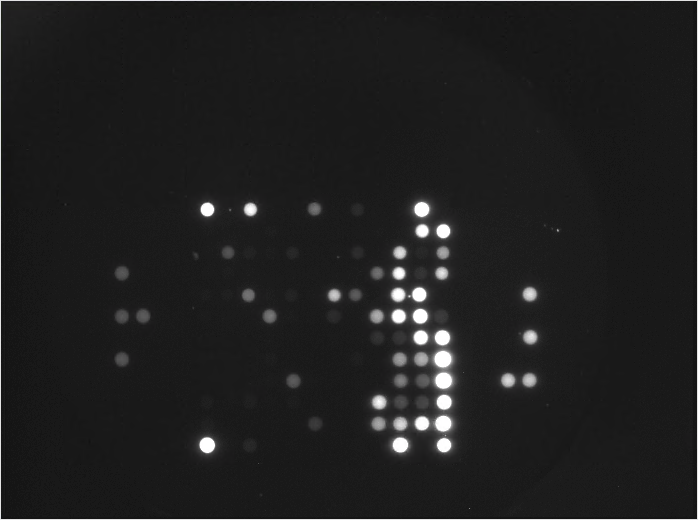

3 Data Generation
Data generation for the PamGene® PamStation® 12 takes place in three steps.
- The Bench step deals with acquiring the samples and preparing them for analysis on the PamChip4.
- The Imaging step is the automated step wherein the sample is processed in the Pamstation12 and the image data is acquired
- The Preprocessing step transforms the image data into flourescence values that can be interpreted by other software.
3.1 The Bench Step
The sample preparation protocol for the PamGene PamStation12 platform is provided by PamGene Corporation and follows standardized procedures to ensure reproducibility and accuracy of the results. Prior to analysis, samples are treated with protease and phosphatase inhibitors to control the catalytic activity and stability of kinases, which can be affected by environmental factors.
For sample preparation, PamGene corporation has provided standard protocols for Preparing Tissue Sections (Protocol 1140) (PamGene Corporation 2020), Preparing Lysates from Tissue Sections(Protocol 1150) (PamGene Corporation 2021) and Preparation of Lysates from Cell Lines and Purified Cells (Protocol 1160) (PamGene Corporation 2022). These protocols can be modified to account for specific experimental conditions.
3.2 The Imaging Step
During the imaging step, the sample and the reagent mixtures are added to the chip that is placed in the machine. The machine is then operated with the Evolve® 3 software. Evolve® 3 accepts a series of steps to perform as an input protocol and then executes that protocol using the machine.
The standardized protocol provided by PamGene Corporation, along with internal control tests and normalization strategies, help minimize technical variation and ensure the reliability of the data generated.
To ensure the sensitivity and reliability of the assay, PamGene International has performed various internal control tests. The technical variation between chips and runs is less than 9% and 15%, respectively, as determined by the coefficient of variability (CV). To account for any technical variation between runs, an internal control sample can be included in the analysis to normalize the data.
While the principle of the imaging step remains the same, the details differ between the PTK and STK machines. The general flow of these steps is as follows:
- The chips are loaded in the PamStation® and blocking buffer is added.
- Once the blocking step is completed, we add the sample mixtures.
- After a reasonable amount of time has passed, the machine takes photographs of the flourescence activity.
3.2.1 PTK Imaging Protocol
For PTK PamChip® 4, the process is as follows:
- Load the chips, blocking buffer and allow for blocking to complete
- Add the sample mixture along with the PamGene® reagent mix that includes the fluorescent antibody
- Two minutes after the addition of the sample mixture, the machine takes pictures every 5 minutes until the end of the process. The pictures are taken at the exposure levels of 5 msec, 25 msec and 100 msec.
- Once all cycles are complete, another picture is taken at the exposure levels of 5 msec, 10 msec, 25 msec, 50 msec, and 100 msec.
3.2.2 STK Imaging Protocol
For STK PamChip® 4, the process is as follows:
- Load the chips, blocking buffer and allow for blocking to complete
- Add the sample mixture along with the PamGene® reagent mix that includes the fluorescent antibody
- Allow the reaction mixture to circulate through the chip for 60 minutes
- Add the detection mix with the second fluorescent antibody
- Two minutes after the addition of the detection mix, the machine takes pictures every 5 minutes until the end of the process. The pictures are taken at the exposure levels of 5 msec, 25 msec and 100 msec.
- Once all cycles are complete, another picture is taken at the exposure levels of 5 msec, 10 msec, 25 msec, 50 msec, and 100 msec.

3.3 The Preprocessing step
The final step of data generation is preprocessing. During the preprocessing step the following tasks happen:
- The image data is analyzed by the BioNavigator® Software to quantify the fluorescence values from the images.
- Annotation data is added to the extracted value, allowing for identification of data at the resolution level of each image, each exposure level and each sample.
- Background signal intensity is measured and a final \(Signal - Background\) metric of intensity is calculated.
- The level of Signal Saturation is measured for each spot on the array.
- The data is output in the form of a table that can be processed by downstream software packages.
BioNavigator® is a software provided by PamGene® for performing image analysis and advanced kinase activity anlyses on the datasets.
An example of the outout from this step can be seen on Zenodo (Imami 2021).